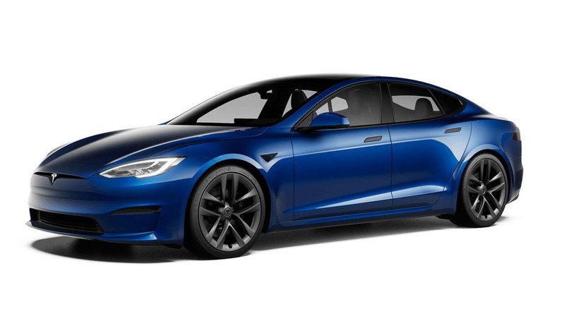
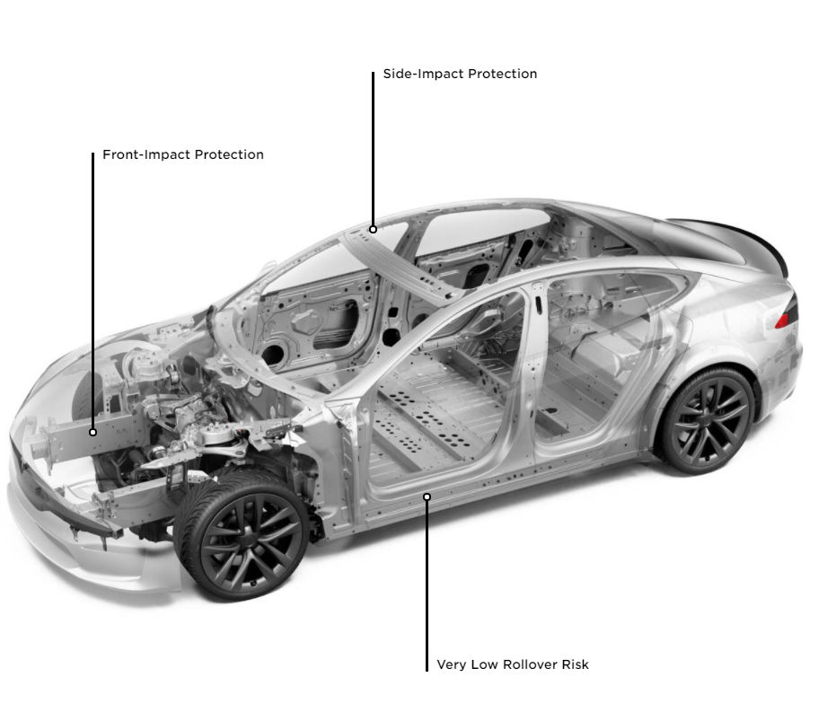

TESLA MODEL S PLAID: 7 ФАКТІВ, ЯКІ ПОТРІБНО ЗНАТИ ПРО ЦЕЙ АВТОМОБІЛЬ

10 червня, в рамках спеціального заходу Delivery Day на заводі Tesla у Фрімонті, голова компанії Ілон Маск продемонстрував Model S у версії Plaid. Tesla Club Ukraine розповідає 7 ключових фактів, які потрібно знати про цей автомобіль.
10 червня, в рамках спеціального заходу Delivery Day на заводі Tesla у Фрімонті, голова компанії Ілон Маск продемонстрував Model S у версії Plaid. Tesla Club Ukraine розповідає 7 ключових фактів, які потрібно знати про цей автомобіль.
Факт 1. Найшвидший серійний автомобіль у світі.
На сьогодні немає жодного серійного автомобіля, який зміг би обігнати цей ліфтбек! Три електродвигуни Model S Plaid розвивають в американській специфікації 1020 к.с. (в більш звичних одиницях виміру - понад 1100 к.с.). На подолання позначки 60 миль/год (96 км/год) електромобілю потрібно 1,99 с, а чверть милі він здатний проїхати за 9,23 с. Максимальна швидкість - 320 км/год. Покращена система терморегуляції дозволить Model S витримувати багаторазові спринти без будь-яких втрат у динаміці.
Факт 2. Найкраща аеродинаміка у світі
Божевільна динаміка забезпечується не тільки силовою установкою, а й просунутою аеродинамікою: коефіцієнт опору повітря у нової Model S - лише 0,208. За даними Tesla, це найкращий результат у світі!
Факт 3. Єдиний спортивний електромобіль із запасом ходу 600+ км
Акумулятори забезпечують електромобілю запас ходу у 627 км. Водночас Model S Plaid оснастили новою системою заряджання - вона дозволить поповнити заряд на 300-кілометровий пробіг за 15 хвилин.
Факт 4. Штурвал замість керма.Головна особливість Tesla Model S Plaid всередині - штурвал замість керма. А ще автомобіль отримав нову медіасистему на процесорі від AMD, яку можна порівняти за продуктивністю із Sony Playstation 5. На 17-дюймовому екрані з роздільною здатністю 2200х1300 пікселів можна буде дивитись кіно та грати в сучасні відеоігри. Також електромобіль забезпечили новою акустичною системою з 22 динаміками та покращеною шумоізоляцією.
Факт 5. Tesla Model S Plaid - дефіцитний автомобіль.
За словами Маска, зараз обсяги виробництва становитимуть кілька сотень електромобілів на тиждень, а в наступному кварталі зростуть до тисячі на тиждень.
Факт 6. Безпечніша від Volvo
Саме так охарактеризував новинку Ілон Маск. Завдяки зміщеному центру ваги, в автомобіля низький ризик перекинутись. Конструкція також додатково посилена, щоб пережити лобове зіткнення

Автомобіль має 12 ультразвукових сенсорів та камери по всьому периметру. Tesla може сама керувати, гальмувати, змінювати та тримати смугу руху, а головне - постійно покращуватись завдяки оновленням через інтернет.
- 1Доїхати з пункту А в пункт Б без допомоги водія, попутно автомобіль не заблудиться на розв'язках;
- 2Якщо ви боїтеся змінювати рядність, Tesla зробить це за вас;
- 3Автомобіль можна покликати до виходу з магазину або попросити його виїхати з гаража;
- 4Будь-які види паркування.
Факт 7. Один з найдешевших автомобілів з божевільними характеристиками
Tesla Model S Plaid можна придбати за базовою ціною 129 990 доларів. У списку платних опцій значиться, наприклад, будь-який інший колір, крім білого (до 2500 доларів), 21-дюймові колеса (4500 доларів), альтернативні варіанти оформлення інтер'єру за ціною до 2000 доларів, а також фірмовий автопілот Full-Self- Driving за 10 тисяч доларів.